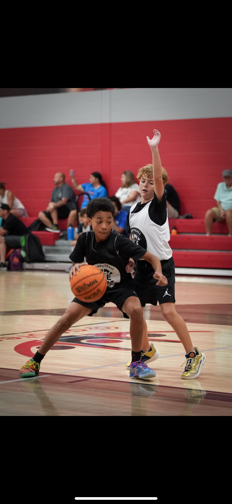
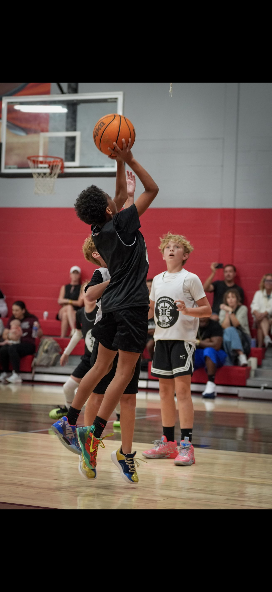
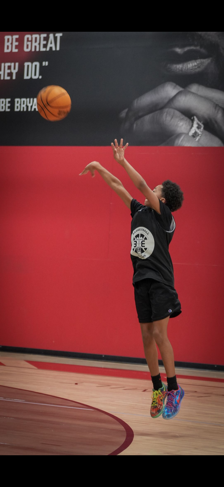
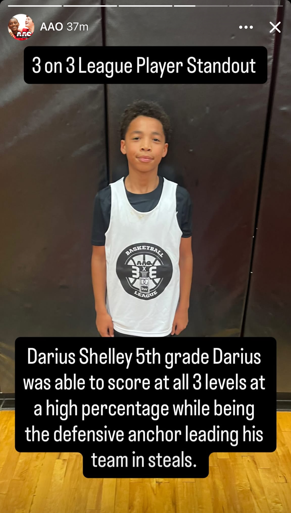

One of Darius’ most exciting football moments came when he intercepted a pass
and ran it all the way back for a touchdown. It was a game-changer that showed
not only his speed and awareness on the field, but also his ability to step up
and make big plays when it counts.
Basketball - 3 on 3 - Fall 2025
The 3-on-3 tournaments give Darius the chance to shine in a fast-paced, high-energy
setting. With fewer players on the court, every possession mattered, and he shows
his ability to handle pressure, create scoring opportunities, and push the tempo.
These games are the perfect stage for his competitive drive and love for the game.




Basketball - Winter 2025
Watch here for Winter 2025 Basketball highlights!
About Darius
Even in kindergarten, he was already showing a love for basketball that couldn’t be contained.
He practiced layups on the small court, learned to dribble and pass, and quickly picked up the
basics of the game. His determination and energy paid off when he earned his very first trophy.
AAO League - Spring-Summer 2025
Darius quickly proved himself as more than just a team player. He became a standout in the AAO Power League.
Competing against some of the toughest young athletes in the region, he showed consistency, hustle, and skill
that set him apart on the court.